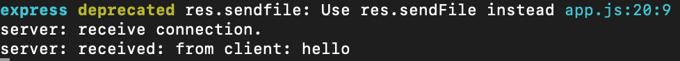
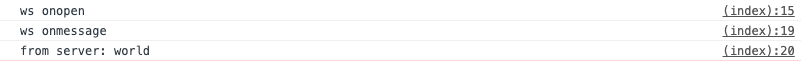
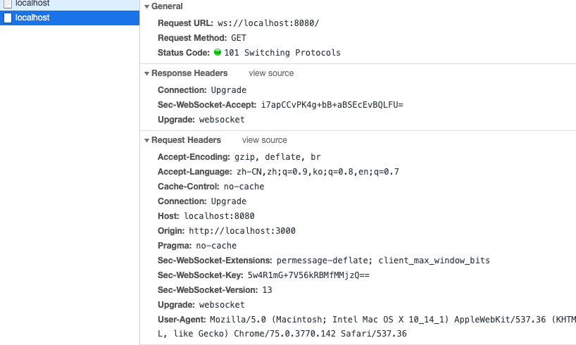

简介
WebSocket 由多个标准构成: WebSocket API 是 W3C 定义的，而 WebSocket 协议(RFC 6455)及其扩展则由 HyBi Working Group(IETF)定义。
HTML5 开始提供的一种浏览器与服务器进行全双工通讯的网络技术，属于应用层协议。它基于TCP 传输协议，并复用 HTTP 的握手通道。WebSocket 可以实现客户端与服务器间双向、基于消息的文本或二进制数据传输。WebSocket 连接远远不是一个网络套接字，因为浏览器在这个简单的 API 之后隐藏了所有的复杂性，而且还提供了更多服务:
连接协商和同源策略;与既有 HTTP 基础设施的互操作;基于消息的通信和高效消息分帧;子协议协商及可扩展能力。
特点
为什么已经有了轮询还要 WebSocket 呢，是因为短轮询和长轮询有个缺陷：通信只能由客户端发起。
WebSocket 提供了一个文明优雅的全双工通信方案。一般适合于对数据的实时性要求比较强的场景，如通信、股票、直播、共享桌面，特别适合于客户端与服务频繁交互的情况下，如聊天室、实时共享、多人协作等平台。
他的主要特点如下：
- 建立在 TCP 协议之上，服务器端的实现比较容易。
- 与 HTTP 协议有着良好的兼容性。默认端口也是 80 和 443，并且握手阶段采用 HTTP 协议，因此握手时不容易屏蔽，能通过各种 HTTP 代理服务器。
- 数据格式比较轻量，性能开销小，通信高效。服务器与客户端之间交换的标头信息大概只有 2 字节;
- 可以发送文本，也可以发送二进制数据。
- 没有同源限制，客户端可以与任意服务器通信。
- 协议标识符是
ws（如果加密，则为 wss），服务器网址就是 URL。ex：ws://example.com:80/some/path - 不用频繁创建及销毁 TCP 请求，减少网络带宽资源的占用，同时也节省服务器资源;
- WebSocket 是纯事件驱动的，一旦连接建立，通过监听事件可以处理到来的数据和改变的连接状态，数据都以帧序列的形式传输。服务端发送数据后，消息和事件会异步到达。
- 无超时处理。
webSocket.readyState
readyState属性返回实例对象的当前状态，共有四种。
CONNECTING：值为 0，表示正在连接。OPEN：值为 1，表示连接成功，可以通信了。CLOSING：值为 2，表示连接正在关闭。CLOSED：值为 3，表示连接已经关闭，或者打开连接失败。
webSocket.onopen
实例对象的onopen属性，用于指定连接成功后的回调函数。
1 | ws.onopen = function () { |
webSocket.onclose
实例对象的onclose属性，用于指定连接关闭后的回调函数。
1 | ws.onclose = function (event) { |
webSocket.onmessage()\webSocket.send()
webSocket.onmessage()
实例对象的onmessage属性，用于指定收到服务器数据后的回调函数。也可以处理二进制数据。
1 | ws.onmessage = function (event) { |
webSocket.send()
实例对象的send()方法用于向服务器发送数据。
1 | ws.onmessage = function (event) { |
webSocket.bufferedAmount
实例对象的bufferedAmount属性，表示还有多少字节的二进制数据没有发送出去。它可以用来判断发送是否结束。
1 | var data = new ArrayBuffer(10000000); |
webSocket.onerror
实例对象的onerror属性，用于指定报错时的回调函数。
1 | socket.onerror = function (event) { |
webSocket 学习
对网络应用层协议的学习来说，最重要的往往就是连接建立过程、数据交换教程。当然，数据的格式是逃不掉的，因为它直接决定了协议本身的能力。好的数据格式能让协议更高效、扩展性更好。
大致可以通过下面的几个方面来学习:
- 如何建立连接
- 数据帧格式
- 数据传递
- 连接保持+心跳
- Sec-WebSocket-Key/Accept 的作用
- 数据掩码的作用
实例
在正式介绍协议细节前，先来看一个简单的例子，有个直观感受。例子包括了WebSocket 服务端、WebSocket 客户端（网页端）。完整代码可以在 这里 找到。这里服务端用了ws这个库。相比大家熟悉的socket.io，ws 实现更轻量，更适合学习的目的。
服务端
代码如下，监听8080端口。当有新的连接请求到达时，打印日志，同时向客户端发送消息。当收到到来自客户端的消息时，同样打印日志。
1 | const express = require('express'); |
服务端运行结果如下图所示：

客户端
代码如下，向 8080 端口发起 WebSocket 连接。连接建立后，打印日志，同时向服务端发送消息。接收到来自服务端的消息后，同样打印日志。
1 | const ws = new WebSocket('ws://localhost:8080'); |
客户端运行结果如下图所示：

如何建立连接
前面提到，WebSocket 复用了HTTP 的握手通道。具体指的是，客户端通过 HTTP 请求与 WebSocket服务端协商升级协议。协议升级完成后，后续的数据交换则遵照WebSocket 的协议。
客户端：申请协议升级
首先，客户端发起协议升级请求。可以看到，采用的是标准的 HTTP 报文格式，且只支持GET 方法。
1 | GET / HTTP/1.1 |
重点请求首部意义如下：
Connection:Upgrade表示要升级协议Upgrade: websocket：表示要升级到websocket协议。Sec-WebSocket-Version: 13：表示websocket的版本。如果服务端不支持该版本，需要返回一个Sec-WebSocket-Versionheader，里面包含服务端支持的版本号。Sec-WebSocket-Key：与后面服务端响应首部的Sec-WebSocket-Accept是配套的，提供基本的防护，比如恶意的连接，或者无意的连接。
注意，上面请求省略了部分非重点请求首部。由于是标准的
HTTP请求，类似Host、Origin、Cookie等请求首部会照常发送。在握手阶段，可以通过相关请求首部进行 安全限制、权限校验等。
服务端：响应协议升级
服务端返回内容如下，状态代码101表示协议切换。到此完成协议升级，后续的数据交互都按照新的协议来。
1 | HTTP/1.1 101 Switching Protocols |
如下图所示：

备注：每个 header 都以\r\n 结尾，并且最后一行加上一个额外的空行\r\n。此外，服务端回应的 HTTP 状态码只能在握手阶段使用。过了握手阶段后，就只能采用特定的错误码。
Sec-WebSocket-Accept 的计算
Sec-WebSocket-Accept根据客户端请求首部的Sec-WebSocket-Key计算出来。
计算公式为：
- 将
Sec-WebSocket-Key跟258EAFA5-E914-47DA-95CA-C5AB0DC85B11拼接。 - 通过
SHA1计算出摘要，并转成base64字符串。
伪代码如下：>toBase64( sha1( Sec-WebSocket-Key + 258EAFA5-E914-47DA-95CA-C5AB0DC85B11 ) )
验证下前面的返回结果：
1 | const crypto = require('crypto'); |
数据帧格式
客户端、服务端数据的交换，离不开数据帧格式的定义。因此，在实际讲解数据交换之前，我们先来看下 WebSocket 的数据帧格式。WebSocket 客户端、服务端通信的最小单位是帧（frame），由 1 个或多个帧组成一条完整的消息（message）。
发送端：将消息切割成多个帧，并发送给服务端；接收端：接收消息帧，并将关联的帧重新组装成完整的消息；
数据帧的格式。详细定义可参考 RFC6455 5.2 节 。
数据帧格式概览
下面给出了 WebSocket 数据帧的统一格式。熟悉 TCP/IP 协议的同学对这样的图应该不陌生。
- 从左到右，单位是比特。比如
FIN、RSV1各占据 1 比特，opcode占据 4 比特。 - 内容包括了
标识、操作代码、掩码、数据、数据长度等。（下一小节会展开）
1 | 0 1 2 3 |
数据帧格式详解
FIN：1 个比特。
如果是1，表示这是消息（message）的最后一个分片（fragment），如果是0，表示不是是消息（message）的最后一个分片（fragment）。
RSV1, RSV2, RSV3：各占 1 个比特。
一般情况下全为 0。当客户端、服务端协商采用 WebSocket 扩展时，这三个标志位可以非 0，且值的含义由扩展进行定义。如果出现非零的值，且并没有采用 WebSocket 扩展，连接出错。
Opcode: 4 个比特。
操作代码，Opcode 的值决定了应该如何解析后续的数据载荷（data payload）。如果操作代码是不认识的，那么接收端应该断开连接（fail the connection）。可选的操作代码如下：
- %x0：
表示一个延续帧。当 Opcode 为 0 时，表示本次数据传输采用了数据分片，当前收到的数据帧为其中一个数据分片。 - %x1：
表示这是一个文本帧（frame） - %x2：
表示这是一个二进制帧（frame） - %x3-7：
保留的操作代码，用于后续定义的非控制帧。 - %x8：
表示连接断开。 - %x9：
表示这是一个 ping 操作。 - %xA：
表示这是一个 pong 操作。 - %xB-F：保留的操作代码，用于后续定义的控制帧。
Mask: 1 个比特。
表示是否要对数据载荷进行掩码操作。从客户端向服务端发送数据时，需要对数据进行掩码操作；从服务端向客户端发送数据时，不需要对数据进行掩码操作。
如果服务端接收到的数据没有进行过掩码操作，服务端需要断开连接。
如果 Mask 是 1，那么在 Masking-key 中会定义一个掩码键（masking key），并用这个掩码键来对数据载荷进行反掩码。所有客户端发送到服务端的数据帧，Mask 都是 1。
Payload length：数据载荷的长度，单位是字节。为 7 位，或 7+16 位，或 1+64 位。
假设数 Payload length === x，如果
x 为 0~126：数据的长度为 x 字节。x 为 126：后续 2 个字节代表一个 16 位的无符号整数，该无符号整数的值为数据的长度。x 为 127：后续 8 个字节代表一个 64 位的无符号整数（最高位为 0），该无符号整数的值为数据的长度。
此外，如果 payload length 占用了多个字节的话，payload length 的二进制表达采用网络序（big endian，重要的位在前）。
Masking-key：或 4 字节（32 位）
所有从客户端传送到服务端的数据帧，数据载荷都进行了掩码操作，Mask 为 1，且携带了 4 字节的 Masking-key。如果 Mask 为 0，则没有 Masking-key。
备注：载荷数据的长度，不包括 mask key 的长度。
Payload data：(x+y) 字节
载荷数据：包括了扩展数据、应用数据。其中，扩展数据 x 字节，应用数据 y 字节。
扩展数据：如果没有协商使用扩展的话，扩展数据数据为 0 字节。所有的扩展都必须声明扩展数据的长度，或者可以如何计算出扩展数据的长度。此外，扩展如何使用必须在握手阶段就协商好。如果扩展数据存在，那么载荷数据长度必须将扩展数据的长度包含在内。
应用数据：任意的应用数据，在扩展数据之后（如果存在扩展数据），占据了数据帧剩余的位置。载荷数据长度 减去 扩展数据长度，就得到应用数据的长度。
掩码算法
掩码键（Masking-key）是由客户端挑选出来的 32 位的随机数。掩码操作不会影响数据载荷的长度。掩码、反掩码操作都采用如下算法：
首先，假设：
original-octet-i：为原始数据的第 i 字节。transformed-octet-i：为转换后的数据的第 i 字节。j：为 i mod 4 的结果。masking-key-octet-j：为 mask key 第 j 字节。
算法描述为： original-octet-i 与 masking-key-octet-j 异或后，得到 transformed-octet-i。
j = i MOD 4
transformed-octet-i = original-octet-i XOR masking-key-octet-j
数据传递
一旦 WebSocket 客户端、服务端建立连接后，后续的操作都是基于数据帧的传递。
WebSocket 根据opcode来区分操作的类型。比如0x8 表示断开连接，0x0-0x2 表示数据交互。
数据分片
WebSocket 的每条消息可能被切分成多个数据帧。当 WebSocket 的接收方收到一个数据帧时，会根据FIN 的值来判断，是否已经收到消息的最后一个数据帧。
FIN=1表示当前数据帧为消息的最后一个数据帧，此时接收方已经收到完整的消息，可以对消息进行处理。FIN=0，则接收方还需要继续监听接收其余的数据帧。
此外，opcode在数据交换的场景下，表示的是数据的类型。0x01 表示文本，0x02 表示二进制。而 0x00比较特殊，表示延续帧（continuation frame），顾名思义，就是完整消息对应的数据帧还没接收完。
数据分片例子
直接看例子更形象些。下面例子来自MDN，可以很好地演示数据的分片。客户端向服务端两次发送消息，服务端收到消息后回应客户端，这里主要看客户端往服务端发送的消息。
第一条消息
FIN=1, 表示是当前消息的最后一个数据帧。服务端收到当前数据帧后，可以处理消息。opcode=0x1，表示客户端发送的是文本类型。
第二条消息
- FIN=0，opcode=0x1，表示发送的是文本类型，且消息还没发送完成，还有后续的数据帧。
- FIN=0，opcode=0x0，表示消息还没发送完成，还有后续的数据帧，当前的数据帧需要接在上一条数据帧之后。
- FIN=1，opcode=0x0，表示消息已经发送完成，没有后续的数据帧，当前的数据帧需要接在上一条数据帧之后。服务端可以将关联的数据帧组装成完整的消息。
1 | Client: FIN=1, opcode=0x1, msg="hello" |
连接保持+心跳
WebSocket 为了保持客户端、服务端的实时双向通信，需要确保客户端、服务端之间的 TCP 通道保持连接没有断开。然而，对于长时间没有数据往来的连接，如果依旧长时间保持着，可能会浪费包括的连接资源。
但不排除有些场景，客户端、服务端虽然长时间没有数据往来，但仍需要保持连接。这个时候，可以采用心跳来实现。
- 发送方->接收方：ping
- 接收方->发送方：pong
ping、pong 的操作，对应的是 WebSocket 的两个控制帧，opcode 分别是 0x9、0xA。
举例，WebSocket 服务端向客户端发送 ping，只需要如下代码（采用 ws 模块）
1 | ws.ping('', false, true); |
Sec-WebSocket-Key/Accept 的作用
前面提到了，Sec-WebSocket-Key/Sec-WebSocket-Accept在主要作用在于提供基础的防护，减少恶意连接、意外连接。
作用大致归纳如下：
- 避免
服务端收到非法的 websocket 连接（比如 http 客户端不小心请求连接 websocket 服务，此时服务端可以直接拒绝连接） - 确保
服务端理解 websocket 连接。因为 ws 握手阶段采用的是 http 协议，因此可能 ws 连接是被一个 http 服务器处理并返回的，此时客户端可以通过 Sec-WebSocket-Key 来确保服务端认识 ws 协议。（并非百分百保险，比如总是存在那么些无聊的 http 服务器，光处理 Sec-WebSocket-Key，但并没有实现 ws 协议。。。） - 用浏览器里发起 ajax 请求，设置 header 时，
Sec-WebSocket-Key 以及其他相关的 header 是被禁止的。这样可以避免客户端发送 ajax 请求时，意外请求协议升级（websocket upgrade） 可以防止反向代理（不理解 ws 协议）返回错误的数据。比如反向代理前后收到两次 ws 连接的升级请求，反向代理把第一次请求的返回给 cache 住，然后第二次请求到来时直接把 cache 住的请求给返回（无意义的返回）。Sec-WebSocket-Key 主要目的并不是确保数据的安全性，因为Sec-WebSocket-Key、Sec-WebSocket-Accept的转换计算公式是公开的，而且非常简单，最主要的作用是预防一些常见的意外情况（非故意的）。
强调：
Sec-WebSocket-Key/Sec-WebSocket-Accept的换算，只能带来基本的保障，但连接是否安全、数据是否安全、客户端/服务端是否合法的 ws 客户端、ws 服务端，其实并没有实际性的保证。
数据掩码的作用
WebSocket 协议中，数据掩码的作用是增强协议的安全性。但数据掩码并不是为了保护数据本身，因为算法本身是公开的，运算也不复杂。除了加密通道本身，似乎没有太多有效的保护通信安全的办法。
代理缓存污染攻击- 最初的提案是对数据进行加密处理。基于安全、效率的考虑，最终采用了折中的方案：
对数据载荷进行掩码处理。